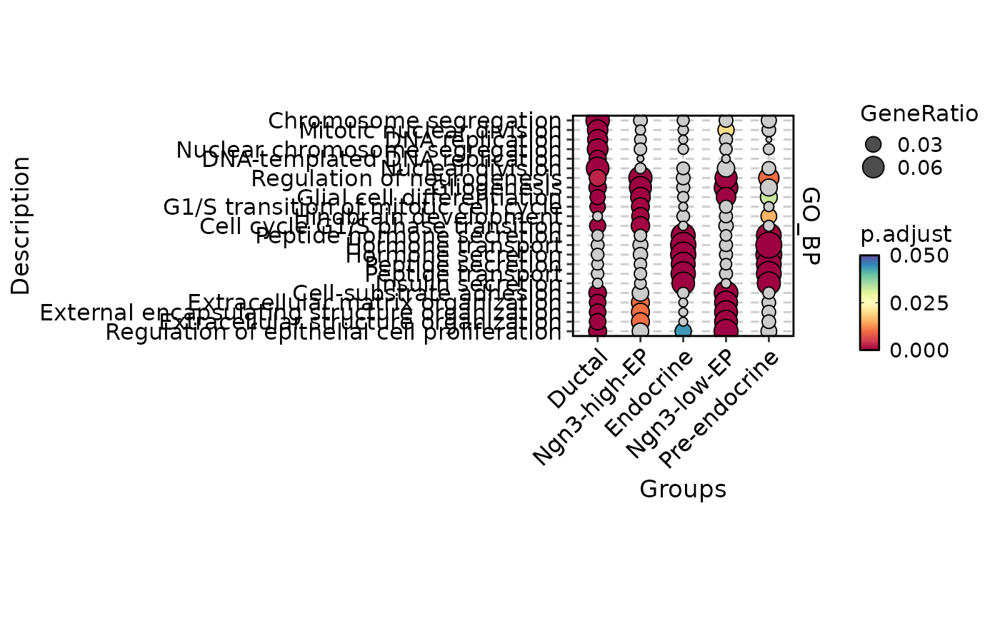

Perform the enrichment analysis (over-representation) on the genes
Source:R/RunEnrichment.R
RunEnrichment.RdPerform the enrichment analysis (over-representation) on the genes
Usage
RunEnrichment(
srt = NULL,
group_by = NULL,
test.use = "wilcox",
DE_threshold = "avg_log2FC > 0 & p_val_adj < 0.05",
geneID = NULL,
geneID_groups = NULL,
geneID_exclude = NULL,
IDtype = "symbol",
result_IDtype = "symbol",
species = "Homo_sapiens",
db = "GO_BP",
db_update = FALSE,
db_version = "latest",
db_combine = FALSE,
convert_species = TRUE,
Ensembl_version = 103,
mirror = NULL,
TERM2GENE = NULL,
TERM2NAME = NULL,
minGSSize = 10,
maxGSSize = 500,
unlimited_db = c("Chromosome", "GeneType", "TF", "Enzyme", "CSPA"),
GO_simplify = FALSE,
GO_simplify_cutoff = "p.adjust < 0.05",
simplify_method = "Wang",
simplify_similarityCutoff = 0.7,
BPPARAM = BiocParallel::bpparam(),
seed = 11
)Arguments
- srt
A Seurat object containing the results of differential expression analysis (RunDEtest). If specified, the genes and groups will be extracted from the Seurat object automatically. If not specified, the
geneIDandgeneID_groupsarguments must be provided.- group_by
A character vector specifying the grouping variable in the Seurat object. This argument is only used if
srtis specified.- test.use
A character vector specifying the test to be used in differential expression analysis. This argument is only used if
srtis specified.- DE_threshold
A character vector specifying the filter condition for differential expression analysis. This argument is only used if
srtis specified.- geneID
A character vector specifying the gene IDs.
- geneID_groups
A factor vector specifying the group labels for each gene.
- geneID_exclude
A character vector specifying the gene IDs to be excluded from the analysis.
- IDtype
A character vector specifying the type of gene IDs in the
srtobject orgeneIDargument. This argument is used to convert the gene IDs to a different type ifIDtypeis different fromresult_IDtype.- result_IDtype
A character vector specifying the desired type of gene ID to be used in the output. This argument is used to convert the gene IDs from
IDtypetoresult_IDtype.- species
A character vector specifying the species for which the analysis is performed.
- db
A character vector specifying the name of the database to be used for enrichment analysis.
- db_update
A logical value indicating whether the gene annotation databases should be forcefully updated. If set to FALSE, the function will attempt to load the cached databases instead. Default is FALSE.
- db_version
A character vector specifying the version of the database to be used. This argument is ignored if
db_updateisTRUE. Default is "latest".- db_combine
A logical value indicating whether to combine multiple databases into one. If TRUE, all database specified by
dbwill be combined as one named "Combined".- convert_species
A logical value indicating whether to use a species-converted database when the annotation is missing for the specified species. The default value is TRUE.
- Ensembl_version
Ensembl database version. If NULL, use the current release version.
- mirror
Specify an Ensembl mirror to connect to. The valid options here are 'www', 'uswest', 'useast', 'asia'.
- TERM2GENE
A data frame specifying the gene-term mapping for a custom database. The first column should contain the term IDs, and the second column should contain the gene IDs.
- TERM2NAME
A data frame specifying the term-name mapping for a custom database. The first column should contain the term IDs, and the second column should contain the corresponding term names.
- minGSSize
A numeric value specifying the minimum size of a gene set to be considered in the enrichment analysis.
- maxGSSize
A numeric value specifying the maximum size of a gene set to be considered in the enrichment analysis.
- unlimited_db
A character vector specifying the names of databases that do not have size restrictions.
- GO_simplify
A logical value indicating whether to simplify the GO terms. If
TRUE, additional results with simplified GO terms will be returned.- GO_simplify_cutoff
A character vector specifying the filter condition for simplification of GO terms. This argument is only used if
GO_simplifyisTRUE.- simplify_method
A character vector specifying the method to be used for simplification of GO terms. This argument is only used if
GO_simplifyisTRUE.- simplify_similarityCutoff
A numeric value specifying the similarity cutoff for simplification of GO terms. This argument is only used if
GO_simplifyisTRUE.- BPPARAM
A BiocParallelParam object specifying the parallel back-end to be used for parallel computation. Defaults to BiocParallel::bpparam().
- seed
The random seed for reproducibility. Defaults to 11.
Value
If input is a Seurat object, returns the modified Seurat object with the enrichment result stored in the tools slot.
If input is a geneID vector with or without geneID_groups, return the enrichment result directly.
Enrichment result is a list with the following component:
enrichment: A data.frame containing all enrichment results.results: A list ofenrichResultobjects from the DOSE package.geneMap: A data.frame containing the ID mapping table for input gene IDs.input: A data.frame containing the input gene IDs and gene ID groups.DE_threshold: A specific threshold for differential expression analysis (only returned if input is a Seurat object).
Examples
data(pancreas_sub)
# pancreas_sub <- RunDEtest(
# pancreas_sub,
# group_by = "CellType"
# )
pancreas_sub <- RunEnrichment(
srt = pancreas_sub,
group_by = "CellType",
DE_threshold = "p_val_adj < 0.05",
db = "GO_BP",
species = "Mus_musculus"
)
#> ℹ [2025-08-11 09:20:06] Start Enrichment
#> ℹ [2025-08-11 09:20:06] Workers: 2
#> ℹ [2025-08-11 09:20:08] Species: Mus_musculus
#> ℹ [2025-08-11 09:20:08] Loading cached db: GO_BP version:3.21.0 nterm:15445 created:2025-08-11 09:02:12.738236
#> ℹ [2025-08-11 09:20:09] Permform enrichment...
#>
|
| | 0%
|
|============================ | 40%
|
|======================================================================| 100%
#>
#> ℹ [2025-08-11 09:21:08] Enrichment done
#> ℹ [2025-08-11 09:21:08] Elapsed time:1.04 mins
EnrichmentPlot(
pancreas_sub,
db = "GO_BP",
group_by = "CellType",
plot_type = "comparison"
)
#> Warning: Vectorized input to `element_text()` is not officially supported.
#> ℹ Results may be unexpected or may change in future versions of ggplot2.

if (FALSE) { # \dontrun{
pancreas_sub <- RunEnrichment(
srt = pancreas_sub,
group_by = "CellType",
DE_threshold = "p_val_adj < 0.05",
db = c("MSigDB", "MSigDB_MH"),
species = "Mus_musculus"
)
EnrichmentPlot(
pancreas_sub,
db = "MSigDB",
group_by = "CellType",
plot_type = "comparison"
)
EnrichmentPlot(
pancreas_sub,
db = "MSigDB_MH",
group_by = "CellType",
plot_type = "comparison"
)
# Remove redundant GO terms
pancreas_sub <- RunEnrichment(
srt = pancreas_sub,
group_by = "CellType",
db = "GO_BP",
GO_simplify = TRUE,
species = "Mus_musculus"
)
EnrichmentPlot(
pancreas_sub,
db = "GO_BP_sim",
group_by = "CellType",
plot_type = "comparison"
)
# Or use "geneID" and "geneID_groups" as input to run enrichment
de_df <- dplyr::filter(
pancreas_sub@tools$DEtest_CellType$AllMarkers_wilcox,
p_val_adj < 0.05
)
enrich_out <- RunEnrichment(
geneID = de_df[["gene"]],
geneID_groups = de_df[["group1"]],
db = "GO_BP",
species = "Mus_musculus"
)
EnrichmentPlot(
res = enrich_out,
db = "GO_BP",
plot_type = "comparison"
)
# Use a combined database
pancreas_sub <- RunEnrichment(
srt = pancreas_sub,
group_by = "CellType",
db = c(
"KEGG", "WikiPathway", "Reactome", "PFAM", "MP"
),
db_combine = TRUE,
species = "Mus_musculus"
)
EnrichmentPlot(
pancreas_sub,
db = "Combined",
group_by = "CellType",
plot_type = "comparison"
)
} # }